А.Бородин - опера "Князь Игорь" - Сцена князя Галицкого и Ярославны

Владислав Калашников - К.Сен-Санс сцена из оперы "Самсон и Далила" - Верховный жрец

Владислав Калашников-Дж. Верди - опера "Бал маскарад" Ария Ренато

Владислав Калашников-Дж.Верди - опера "Трубадур" - Ария ди Луна

Владислав Калашников-Дж. Верди - Ансамбль из оперы "Трубадур"
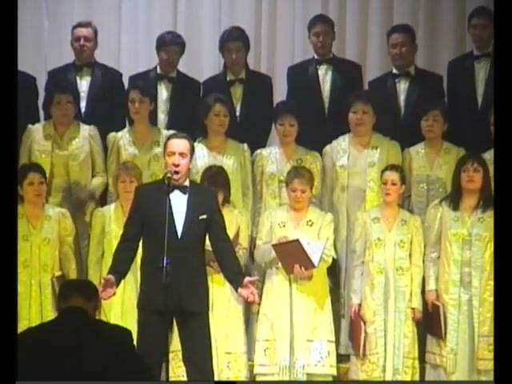
Владислав Калашников - В.А Моцарт опера "Дон Жуан" - ария Дон Жуана

Владислав Калашников - Р.Леонкавалло - Пролог ''Паяцы'' Волгоград

Владислав Калашников - П.И Чайковский опера "Иоланта" ария Эбн Хаккия
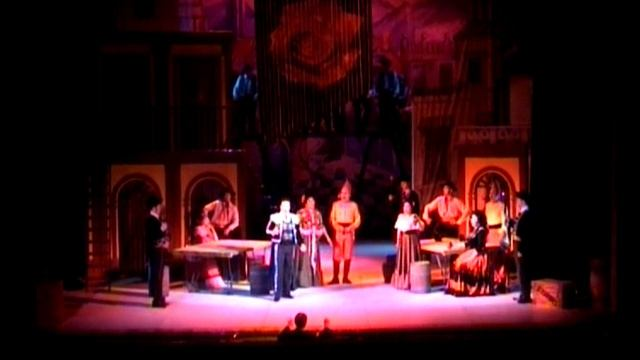
Владислав Калашников - Дж.Бизе опера "Кармен" ария Эскамильо
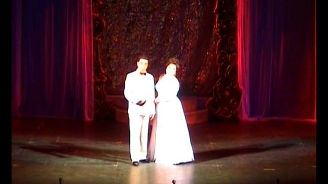
И.Кальман оперетта "Мистер Икс" - Дуэт "Кумир мой"
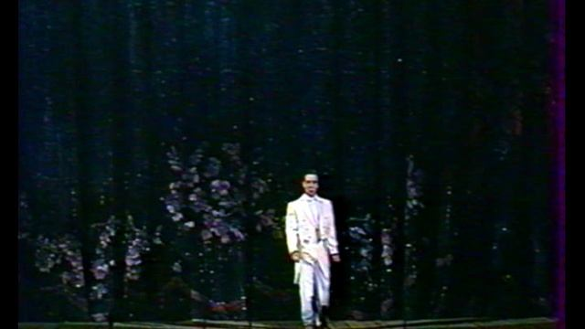
Рудольф Фримль и Герберт Стотхарт оперетта "Роз-Мари" - Песенка Джима
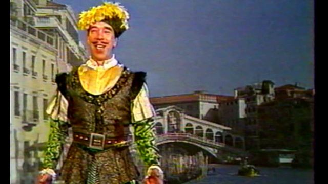
Н.А Римский-Корсаков опера "Садко" - Песня Веденецкого гостя
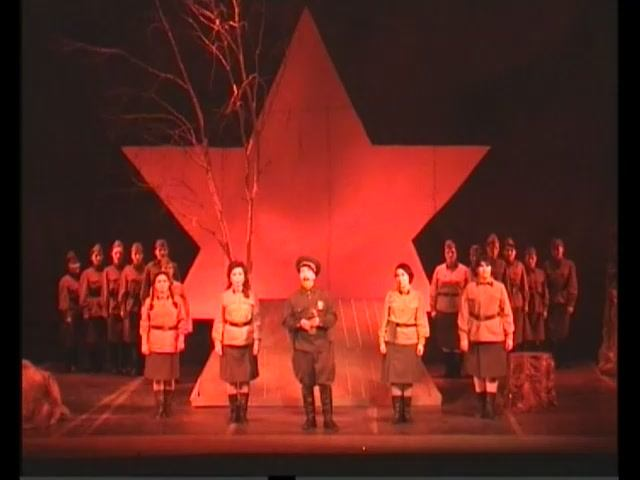
К.Молчанов опера "Зори здесь тихие" - Васков
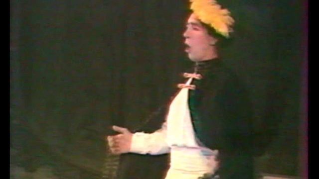
Ш.Гуно опера "Фауст" Каватина Валентина
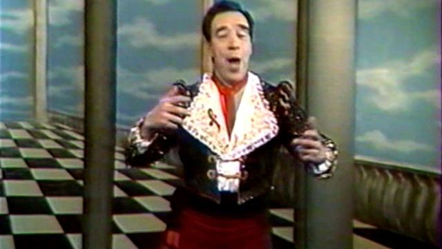
Дж. Россини - опера "Севильский Цирюльник" - Каватина Фигаро
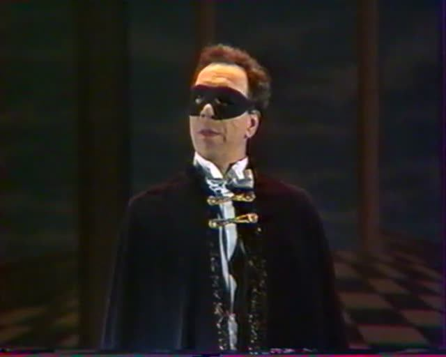
И.Кальман - оперетта Мистер икс - Ария Мистера Икс
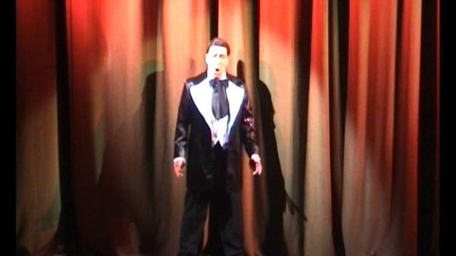
И.Кальман - Мистер Икс Ария Мистера Икс из 3 действия - "Миновала моя весна"
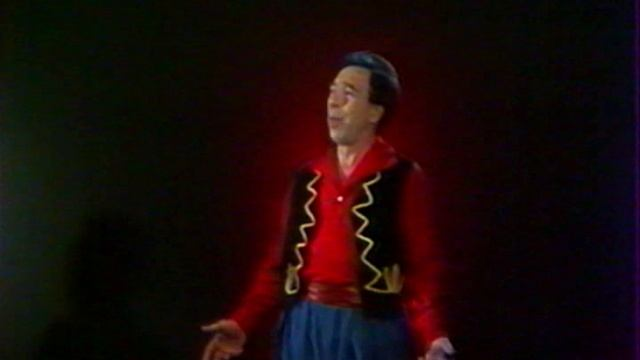